대기환경기사 (2010-03-07 기출문제)
1과목: 대기오염 개론
1. 바람에 관한 다음 설명 중 옳지 않은 것은?
- 지표면으로부터의 마찰효가가 무시될 수 있는 층에서 기압경도력과 전향력의 평형에 의하여 이루어지는 바람을 지균풍이라고 한다.
- 지구자전에 의한 전향력 때문에 북반구에서는 진로의 오른쪽 방향으로, 남반구에서는 진로의 왼쪽방향으로 바람의 방향이 변한다.
- 기압경도력, 전향력 및 원심력의 평형으로 나타나는 바람을 경도풍이라고 한다.
- 산악지형에서 발생하는 산곡풍 중 낮에는 산의 사면을 따라 하강류가 발생한다.
(정답률: 62%)

2. 다음 중 HCHO의 배출관련 업종으로 가장 거리가 먼 것은?
- 포르말린제조공업
- 합성수지 공업
- 금속제련공업
- 피혁공업
(정답률: 69%)
3. 부피가 1000m3 이고 환기가 되지 않은 작업장에서 화학반응을 일으키지 않는 오염물질이 분당 60mg씩 배출되고 있다. 작업을 시작하기 전에 측정한 이 물질의 평균 농도가 10mg/m3 이라면 1시간 이후의 작업장의 평균 농도는 얼마인가? (단, 상자모델을 적용하며, 작업시작 전, 후의 온도 및 압력조건은 동일하다.)
- 11.0 mg/m3
- 13.6 mg/m3
- 18.1 mg/m3
- 19.9 mg/m3
(정답률: 56%)
4. 굴뚝 배출가스량 15m3/s, HCl 농도 802ppm, 풍속 20m/s, Ky= 0.07, Kz= 0.08 인 중립 대기조건에서 중심축상 최대 지표농도가 1.61×10-2ppm인 경우 굴뚝의 유효고는? (단, Sutton의 확산식을 이용한다.)
- 약 30m
- 약 50m
- 약 70m
- 약 100m
(정답률: 37%)
5. 굴뚝의 반경이 1.5m, 평균풍속이 180m/min 인 경우 굴뚝의 유효굴뚝높이를 24m 증가시키기 위한 굴둑 배출가스 속도는? (단, 연기의 유효상승 높이 Δh=1.5×
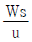
× D 이용)- 13 m/s
- 16 m/s
- 18 m/s
- 32 m/s
(정답률: 61%)
6. 다음 특정물질 중 오존파괴지수가 가장 큰 것은?
- CHFBr2
- CHF2Br
- CH2FBr
- C2HFBr4
(정답률: 49%)
7. 냄새물질의 특성의 관한 설명으로 가장 거리가 먼 것은?
- 분자량이 큰 물질은 냄새강도가 분자량에 반비례해서 단계적으로 약해지는 경향이 있으나 특정한 물질은 냄새가 거의 없다.
- 분자 내 수산기의 수가 1개 일 때 가장 약하고, 락톤 및 케톤호합물은 환상이 크게 되면 냄새가 약해진다.
- 실온에서 대다수는 액상이나 기체나 고체로 존재하는 경우도 있다.
- 화학물질이 냄새물질로 되기 위해서는 친유성기와 친수성기의 양기를 가져야 한다.
(정답률: 67%)
8. 다음 설명하는 오염물질로 가장 적합한 것은?
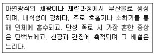
- Mn
- Hg
- Cd
- Pb
(정답률: 62%)
9. 혼합층에 관한 설명으로 가장 적합한 것은?
- 최대혼합깊이는 통상 낮에 가장 적고, 밤시간을 통하여 점차 증가한다.
- 야간에 역전이 극심한 경우 최대혼합깊이는 5000m 정도까지 증가한다.
- 계절적으로 최대혼합깊이는 주로 겨울에 최소가 되고 이른 여름에 최대값을 나타낸다.
- 환기량은 혼합층의 온도와 혼합층내의 평균퐁속을 곱한 값으로 정의된다.
(정답률: 82%)
10. 다음 설명에 해당하는 대기분산모델로 가장 적합한 것은?
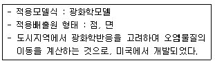
- ADMS
- AUSPLUME
- UAM
- SMOGSTOP
(정답률: 64%)
11. 실내공기 오염물질에 관한 다음 설명 중 옳지 않은 것은?
- 석면의 공업적 생산 및 소비량은 각섬석계열이 95% 정도이고, 나머지가 사문석 계열로서 강도는 높으나 굴절성은 약하다.
- 석면은 얇고 긴 섬유의 형태로서 규소, 수소, 마그네슘, 철, 산소 등의 원소를 함유하며, 그 기본구조는 산화규소의 형태를 취한다.
- 벤젠은 무색의 휘발성 액체이며, 끓는점은 약 80℃ 정도이고, 인화성이 강하다.
- 톨루엔의 끓는점은 약 111℃ 정도이고, 휘발성이 강하고 그 증기는 폭발성이 있다.
(정답률: 64%)
12. 다음 중 불소 및 그 화합물의 배출 및 피해에 관한 설명으로 가장 거리가 먼 것은?
- 적은 농도에서도 피해를 주며, 특히 어린 잎에 현저하다.
- 지표식물로는 자주개나리, 목화, 시금치 등이다.
- 주로 잎의 끝이나 가장자리의 발육부진이 두드러진다.
- 불소 및 그 화합물은 알루미늄의 전해공장이나 인산비료 공장에서 HF 또는 SiF4 형태로 배출된다.
(정답률: 58%)
13. 지표높이 10m에서의 풍속이 4m/s일 때 상공의 풍속이 6m/s가 되는 위치의 높이는? (단, 풍속지수는 0.28. Deacon법칙 적용)
- 약 15m
- 약 22m
- 약 33m
- 약 43m
(정답률: 60%)
14. 다음 중 온실효과(Green House Effect)에 관한 설명으로 옳은 것은?
- 온실효과에 대한 기여도는 H2O ＞ CFC 11 & 12 ＞ CH4 ＞ CO2 순이다.
- CO2 농도는 일정주기로 증감이 되풀이되는데 1년 주기로 봄부터 여름에는 증가하고, 가을부터 겨울에는 감소한다.
- 온실가스들은 각각 적외선 흡수대가 있으며, CO2 의 주요 흡수대는 파장 13 - 17㎛ 정도이다.
- 오솔로협약은 기후변화협약에 따른 온실가스 감축목표와 관련한 국제협약이다.
(정답률: 60%)
15. 다음 중 다이옥신의 광분해에 가장 효과적인 파장범위는?
- 100-150nm
- 250-340nm
- 500-800nm
- 1200-1500nm
(정답률: 75%)
16. 다음 중 대기내에서의 오염물질의 일반적인 체류시간 순서로 옳은 것은?
- CO2 ＞ N2O ＞ CO ＞ SO2
- N2O ＞ CO2 ＞ CO ＞ SO2
- CO2 ＞ SO2 ＞ N2O ＞ CO
- N2O ＞ SO2 ＞ CO2 ＞ CO
(정답률: 60%)
17. 다음 중 염소(Cl2) 또는 염화수소(HCl) 배출관련 업종과 가장 거리가 먼 것은?
- 활성탄 제조업
- 비스코스 섬유공업
- 플라스틱 공업
- 소오다 공업
(정답률: 46%)
18. 황화합물에 대한 설명으로 옳지 않은 것은?
- 가스 상태의 SO2는 대기압하에서 환원제 및 산화제 모두 작용할 수 있다.
- 황화합물은 산화상태가 클수록 증기압이 커지고, 용해성은 감소한다.
- 해양을 통해 자연적 발생원 중 가장 많은 양의 황화합물이 DMS형태로 배출되고 있으며, 일부는 H2S, OCS, CS2 형태로 배출되고 있다.
- 대기중으로 유입된 SO2는 물에 잘 녹고 반응성도 크므로 입자상 물질의 표면이나 물방울에 흡착된 후 비균질반응에 의해 대부분 황산염으로 산화되어 제거된다.
(정답률: 41%)
19. 내경이 2m인 굴뚝에서 온도 440K의 연기가 6m/s의 속도로 분출되며 분출지점에서의 주변 풍속은 3m/s이다. 대기의 온도가 300K, 중립조건일 때 연기의 상승 높이(Δh)는? (단, Δh=
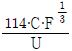
이용, C= 1.58, F= 부력매개변수)- 약 148m
- 약 166m
- 약 181m
- 약 195m
(정답률: 45%)
20. 이동 배출원이 주요한 배출원인 도심지역의 경우, 하루 중 시간대별 각 오염물의 농도 변화는 일정한 형태를 나타내는데, 일반적으로 가장 이른 시간에 하루 중 최대를 나타내는 물질은?
- O3
- NO2
- NO
- Aldehydes
(정답률: 69%)
2과목: 연소공학
21. 어떤 1차 반응에서 100초 동안 반응물의 1/2이 분해되었다면, 반응물의 1/10 이 남을 때까지 걸리는 시간은?
- 약 4분 14초
- 약 5분 32초
- 약 8분 18초
- 약 10분 15초
(정답률: 62%)
22. 확산연소에서 분류속도 변화에 따라 변화하는 분류확산화염에 대한 설명으로 가장 거리가 먼 것은?
- 분류속도가 작은 영역에서는 화염의 표면이 매끈한 층류화염을 형성하고, 이 층류화염의 길이는 분류속도의 제곱에 비례하여 증가한다.
- 층류화염에서 난류화염으로 전이하는 높이는 유속이 증가함에 따라 급속히 아래쪽으로 이동하여 층류화염의 길이가 감소된다.
- 전이화염에서 유속을 더 증가시키면 대부분의 화염이 난류가 되고 전체화염의 길이는 크게 변화하지 않는다.
- 층류화염에서 난류화염으로의 전이는 분류 레이놀즈수에 의존한다.
(정답률: 30%)
23. CH4 80%, O2 3%, CO 7%, H2 10%의 조성으로 된 가스 1Sm3를 완전연소 하는데 필요한 이론공기량(Sm3/Sm3)은?
- 4.76
- 5.85
- 7.88
- 9.26
(정답률: 45%)
24. 석탄을 공업분석하여 다음과 같은 결과를 얻었다. 이 석탄의 연료비는?
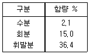
- 1.3
- 2.1
- 2.8
- 3.4
(정답률: 50%)
25. Methane을 공기중에서 완전연소시킬 때 이론 연소용 공기와 연료의 질량비(이론 연소용 공기의 질량 / 연료의 질량, kg/kg)는?
- 4
- 8.6
- 17.2
- 25.1
(정답률: 45%)
26. 석탄슬러리 연소에 대한 설명으로 옳지 않은 것은?
- 석탄 슬러리 연료는 석탄분말에 기름을 혼합한 COM과 물을 혼합한 CWM으로 대별된다.
- 표면연소 시기에서는 COM 연소의 경우 연소온도가 높아진 만큼 표면연소가 가속된다고 볼 수 있다.
- 분해연소 시기에서는 CWM연소의 경우 15wt%(w/w)의 물이 증발하여 증발열을 빼앗음과 동시에 휘발분과 산소를 희석하기 때문에 화염의 안전성이 좋다.
- 분해연소 시기에서는 COM 연소의 경우 50wt%(w/w) 중유에 휘발분이 추가되는 형태로 되기 때문에 미분탄 연소보다는 분무연소에 더 가깝다.
(정답률: 49%)
27. 액체연료의 연소장치에 관한 설명 중 옳지 않은 것은?
- 건타입 버너는 연소가 양호하고 소형이며 전자동 연소가 가능하다.
- 저압기류 분무식 버너의 분무각도 30-60° 정도이고, 분무에 필요한 공기량은 이론연소 공기량의 30-50% 정도이다.
- 고압기류 분무식 버너의 분무에 필요한 1차 공기량은 이론연소 공기량의 7-12% 정도이다.
- 회전식 버너는 유압식 버너에 비해 연료유의 입경이 작으며, 직결식은 분무컵의 회전수가 전동기의 회전수보다 빠른 방식이다.
(정답률: 40%)
28. 탄소 89%, 수소 11%인 조성의 액체 연료를 매시 187kg 완전연소한 경우 연소 배기가스를 분석하였더니 CO2 12.5%, O2 3.5%, N2 84%의 결과를 얻었다. 이 경우 1시간당 연소에 실제 소요된 공기량(Sm3)은?
- 약 2100 Sm3
- 약 2400 Sm3
- 약 2700 Sm3
- 약 2900 Sm3
(정답률: 45%)
29. C 87%, H 10%, S 3%인 중유의 이론적인 CO2max 값은?
- 9.6%
- 12.6%
- 16.3%
- 20.6%
(정답률: 42%)
30. 기체연료에 관한 설명 중 옳은 것은?
- 발생로가스는 코오크스나 석탄을 불완전 연소해서 얻는 가스이고, 주성분은 CO와 N2 이다.
- 석탄가스는 석탄을 건류할 때 생기는 가스를 총칭한 것으로 주성분은 CO, CO2 이고, 산업시설의 동력용으로 많이 사용된다.
- 고로가스는 제철용 고로에서 부산물로 얻어지는 가스이며, 발생로가스와 유사하지만 H2, O2가 많고 발열량은 2500-3000kcal/Sm3 정도이다.
- 부생가스 중 코오크스로 가스는 CO, N2가 , 고로가스는 CH4, H2가 주성분이다.
(정답률: 36%)
31. Propane과 Ethane의 혼합가스 3Sm3을 이론적으로 완전연소 시킨 결과 배기가스 중 탄산가스의 생성량이 7.1Sm3 이었다면 이 혼합가스 중의 Propane과 Ethane의 mol비(Propane / Ethane)는?
- 0.58
- 0.72
- 1.39
- 1.72
(정답률: 31%)
32. 저위발열량 11500kcal/kg인 중유를 완전연소 시키는데 필요한 이론습연소 가스량은? (단, 표준상태 기준, Rosin의 식 적용)
- 약 8.2 Sm3/kg
- 약 12.8 Sm3/kg
- 약 15.2 Sm3/kg
- 약 19.5 Sm3/kg
(정답률: 63%)
33. 다음은 연소학에서 이용하는 주된 무차원 수에 관한 설명이다. 어떤 무차원 수인가?
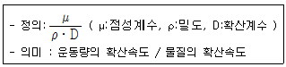
- Karlovitz number
- Nusselt number
- Grashof number
- Schmidt number
(정답률: 37%)
34. 석탄의 성상에 관한 설명으로 옳지 않은 것은?
- 석탄회분의 용융 시 SiO2, Al2O3 등의 염기성 산화물량이 많으면 회분의 용융점이 낮아진다.
- 점결성은 석탄에서 코크스를 생산할 때 중요한 성질이다.
- 연료 조성변화에 따른 연소특성으로 수분은 착화불량과 열손실을, 회분은 발열량 저하 및 연소불량을 초래한다.
- 석탄의 휘발분은 매연발생의 요인이 된다.
(정답률: 64%)
35. 석탄의 유동층 연소방식에 관한 설명과 가장 거리가 먼 것은?(오류 신고가 접수된 문제입니다. 반드시 정답과 해설을 확인하시기 바랍니다.)
- 미분탄장치가 필요하며, 화염층을 작게 할 수 있다.
- 전열면적이 적게 든다.
- 부하변동에 쉽게 응할 수 있다.
- 다른 연소법에 비해 재와 미연탄소의 방출이 많다.
(정답률: 31%)
36. 공기비가 클 경우 나타나는 현상으로 거리가 먼 것은?
- 가스의 폭발위험과 매연발생이 크다.
- 연소실내의 연소온도가 낮아진다.
- 배기가스에 의한 열손실이 증가한다.
- 배기가스 중 SO2, NO2 함량이 많아져 부식이 촉진된다.
(정답률: 61%)
37. 로타리킬른의 특징으로 가장 거리가 먼 것은?
- 소각전처리가 크게 요구되지 않는다.
- 소각재 배출 시 열손실이 적고, 별도의 후연소기가 불필요하다.
- 소각 시 공기와의 접촉이 좋고 효율적으로 난류가 생성된다.
- 여러 가지 형태의 폐기물(고체, 액체, 슬러지 등)을 동시 소각할 수 있다.
(정답률: 50%)
38. Nanane을 이론적으로 완전연소 시킬 때 무게기준으로 한 공연비(AFR)는? (단, 표준상태 기준)
- 약 10.5
- 약 12.9
- 약 14.0
- 약 15.1
(정답률: 42%)
39. 공기 중 CO2 가스부피가 5%를 넘으면 인체에 해롭다고 한다. 지금 450m3 되는 방에서 문을 닫고 80%의 탄소를 가진 숯 약 몇 kg을 태우면 인체에 해로운 상태로 접어들겠는가? (단, 기존 공기 중 CO2 가스의 부피는 고려하지 않으며, 표준상태를 기준으로 하고, 탄소성분은 완전연소해서 모두 CO2로 된다.)
- 9.8
- 12.3
- 15.1
- 20.6
(정답률: 39%)
40. 유동층 연소에서 부하변동에 대한 적응성이 좋지 않은 단점을 보완하기 위한 방법으로 가장 거리가 먼 것은?
- 공기분산판을 분할하여 층을 부분적으로 유동시킨다.
- 층 내의 연료비율을 고정시킨다.
- 유동층을 몇 개의 셀로 분할하여 부하에 따라 작동시키는 수를 변화시킨다.
- 층의 높이를 변화시킨다.
(정답률: 49%)
3과목: 대기오염 방지기술
41. 면적 1.5m2인 여과집진장치로 먼지농도가 1.5g/m3인 배기가스가 100m3/min 으로 통과하고 있다. 먼지가 모두 여과포에서 제거되었으며, 집진된 먼지층의 밀도가 1g/cm3 라면 1시간 후 여과된 먼지층의 두께는?
- 1.5mm
- 3mm
- 6mm
- 15mm
(정답률: 53%)
42. 흡수에 있어서 물에 대한 용해도가 높은 가스의 경우 액분산형 흡수장치가 사용된다. 다음 중 액분산형 흡수장치로 처리하기에 부적합한 가스는?
- 암모니아
- 일산화탄소
- 크롬산미스트
- 황화수소
(정답률: 47%)
43. 침강실의 길이 5m인 중력집진장치를 사용하여 침강집진할 수 있는 먼지의 최소입경이 140㎛였다. 이 길이를 2배로 변경할 경우 침강실에서 집진가능한 최소입경(㎛)은? (단, 배출가스의 흐름은 층류이고, 길이 이외의 모든 설계조건은 동일하다.)
- 70
- 89
- 99
- 129
(정답률: 48%)
44. 유해가스별 제거공정으로 가장 거리가 먼 것은?
- 불화수소(HF) : 산화철 침전법
- 염화수소(HCl) : 수세법
- 불소(F2) : 가성소다에 의한 흡수법
- 황화수소(H2S) : 중화법 및 산화법
(정답률: 33%)
45. 89% 총 집진효율을 얻기 위해 30% 효율을 가진 1차 전처리설비를 이미 설치하였다. 2차 처리장치의 효율을 몇 % 로 하여야 하는가?
- 80.9%
- 84.3%
- 92.9%
- 96.9%
(정답률: 62%)
46. 장방형 굴뚝에서 가로길이가 a, 세로길이가 b 일 경우 상당직경의 표현식으로 옳은 것은?
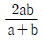
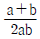
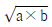
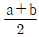
(정답률: 75%)
47. 다음 유해가스 처리에 관한 설명 중 가장 거리가 먼 것은?
- 염화인(PCl3)은 물에 대한 용해도가 낮아 암모니아를 불어넣어 병류식 충전탑에서 흡수처리한다.
- 시안화수소는 물에 대한 용해도가 매우 크므로 가스를 물로 세정하여 처리한다.
- 아크로레인은 그대로 흡수가 불가능하며 NaClO 등의 산화제를 혼입한 가성소다 용액으로 흡수 제거한다.
- 이산화셀렌은 코트럴집진기로 포집, 결정으로 석출, 물에 잘 용해되는 성질을 이용해 스크러버에 의해 세정하는 방법 등이 이용된다.
(정답률: 38%)
48. 염소를 함유한 폐가스를 소석회와 반응시켜 생성되는 물질은?
- 실리카겔
- 표백분
- 차아염소산나트륨
- 포스겐
(정답률: 64%)
49. 송풍기의 턱트가 송출관은 있고 흡입관이 없을 때 송풍기 정압(kg/m2)을 구하는 식으로 옳은 것은? (단, 송풍기 전압(Pt), 송출구에서 전압(Pt2), 흡입구에서 전압(Pt1), 송풍기 정압(Ps), 송출구에서 정압(Ps2), 흡입구에서 정압(Ps1), 송풍기 동압(Pd), 송출구에서의 동압(Pd2), 흡입구에서의 동압(Pd1)이고, 압력단위는 kg/m2 )
- Ps2
- -(Ps1 + Pd1)
- Ps2 + Pd2
- Ps1
(정답률: 45%)
50. 다음 중 가스분산형 흡수장치에 해당하는 것은?
- 기포탑
- 사이클론 스크러버
- 분무탑
- 충전탑
(정답률: 57%)
51. 여과집진장치의 특성으로 거리가 먼 것은?
- 방사성 먼지용 Air filter는 내면여과방식에 해당한다.
- 표면여과방식에서 초층의 눈막힘을 방지하기 위해 처리가스의 온도를 산노점 이상으로 유지한다.
- 내면여과방식은 습식도 있지만, 일반적으로 건식으로 사용된다.
- Package형 Filter는 표면여과방식에 해당하며 여과속도는 크지만, 여재의 압력손실이 낮아 많이 사용된다.
(정답률: 45%)
52. 다음은 흡착제에 관한 설명이다. ( )안에 가장 적합한 것은?
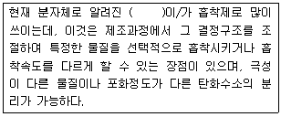
- Activated carbon
- Synthetic Zeolite
- Silica gel
- Activated Alumina
(정답률: 58%)
53. 다이옥신 제어방법으로 가장 거리가 먼 것은?
- 촉매분해법은 촉매로 V2O5 등의 금속산화물, Pt, Pd 등의 귀금속을 사용한다.
- 열분해법은 산소가 충분한 분위기에서 염소첨가반응, 탈수소화반응 등에 의해 제거시키는 방법이다.
- 집진장치의 온도는 200℃ 이하로 내리는 것이 바람직하다.
- 오존분해법은 염기성조건일수록, 온도는 높을수록 분해속도가 커진다.
(정답률: 29%)
54. 다음은 불소화합물 처리에 관한 설명이다. ( )안에 알맞은 화학식은?
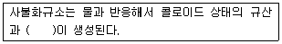
- CaF2
- NaHF2
- NaSiF6
- H2SiF6
(정답률: 65%)
55. 사이클론(Cyclone)에서 가스유입속도를 3배로 증가시키고 유입구폭을 2배로 늘리면 Lapple의 절단입경(Cut Size Diameter)인 dp′는 처음값(dp)에 비해 어떻게 변화되는가?
- 1.38dp
- 1.23dp
- 0.82dp
- 0.72dp
(정답률: 36%)
56. 유해가스의 연소처리에 관한 설명으로 가장 거리가먼 것은?
- 직접연소법은 경우에 따라 보조연료나 보조공기가 필요하며 대체로 오염물질의 발열량이 연소에 필요한 전체열량의 50% 이상일 때 경제적으로 타당하다.
- 직접연소법은 After Burner법이라고도 하며, HC, H2, NH3, HCN 및 유독가스 제거법으로 사용된다.
- 가열연소법은 배기가스 중 가연서 오염물질의 농도가 매우 높아 직접연소법으로 불가능할 경우에 주로 사용되고 조업의 유동성이 적어 NOx발생이 많다.
- 가열연소법에서 연소로 내의 체류시간은 0.2-0.8초 정도이다.
(정답률: 56%)
57. 유해가스 처리방법에 관한 설명으로 가장 거리가 먼 것은?
- 활성탄에 의한 흡착법으로 효과적으로 제거가능한 것은 암모니아, 메탄, 메탄올 등이며, 거의 효과가 없는 것은 유기염소화합물, 에스테르류 등이다.
- 촉매연소법은 직접연소법에 비해 질소산화물의 발생량이 적고 낮은 농도로 배출할 수 있다.
- 촉매연소법은 직접연소법에 비해 연료소비량이 적으므로 운전비는 절감되나 촉매독의 문제가 있다.
- 산, 알칼리, 약액세정법으로 제거가능한 대표적 성분으로는 무기산(염산, 황산)의 희박수용액에 의한 암모니아, 아민류 등의 염기성성분이다.
(정답률: 49%)
58. 유해가스 흡수장치 중 다공판탑에 관한 설명으로 옳지 않은 것은?
- 비교적 대량의 흡수액이 소요되고, 가스겉보기 속도는 10-20m/s 정도이다.
- 액가스비는 0.3-5L/m3, 압력손실은 100-200mmH2O/단 정도이다.
- 고체부유물 생성시 적합하다.
- 가스량의 변동이 격심할 때는 조업할 수 없다.
(정답률: 48%)
59. 전기집진장치의 장애현상 중 먼지의 비저항이 비정상적으로 높아 2차전류가 현저하게 떨어질 때의 대책으로 다음 중 가장 적합한 것은?
- Baffle을 설치한다.
- 방전극을 교체한다.
- 스파크 횟수를 늘린다.
- 바나듐을 투입한다.
(정답률: 68%)
60. 집진장치에 관한 설명으로 옳지 않은 것은?
- 전기집진장치에서 방전극은 굵고 짧을수록 Corona 방전을 일으키기 쉽다.
- 세정식 집진장치 중 가압수식인 벤츄리스크러버, 제트스크러버 등은 목(Throat) 부의 기본유속이 클수록 작은 액적이 형성되어 미세한 입자를 제거할 수 있다.
- 관성력 집진장치에서 반전식의 경우 방향전환을 하는 가스의 곡률반경이 작을수록 미세한 먼지를 분리포집할 수 있다.
- 중력식 집진장치는 일정한 유속에 대하여 침강실의 높이는 낮을수록 길이는 길수록 높은 집진율을 얻는다.
(정답률: 41%)
4과목: 대기오염 공정시험기준(방법)
61. 굴뚝 배출가스 중의 벤젠 분석방법에 관한 설명으로 옳지 않은 것은?
- 메틸에틸케톤법은 시료 채취량 10L인 경우 시료가스 중의 벤젠농도 약 2-20 v/v ppm범위의 분석에 적합하다.
- 메티에틸케톤법은 시료중의 벤젠을 질산암모늄을 가한 황산에 흡수시켜 니트로화하고 이것을 물로 희석한 후 중화시켜 메틸에틸케톤을 가한다.
- 고체흡착 열탈착법은 시료가 채취된 흡착관의 마개를 제거하고 사염화탄소가 들어있는 바이알에 흡착제를 넣어 추출한다.
- 메틸에틸케톤법은 방해성분으로 톨루엔과 크실렌은 자색으로, 모노클로로벤젠과 에틸벤젠은 적색으로 발색하므로 측정치가 높아진다.
(정답률: 31%)
62. 연료용 유류 중의 황함유량 측정방법 중 방사선식 여기법에 관한 설명으로 옳지 않은 것은?
- 여기법 분석계의 전원 스위치를 넣고, 1시간 이상 안정화 시킨다.
- 시료에 방사선을 조사하고, 여기된 황의 원자에서 발생하는 γ선의 강도를 측정한다.
- 표준 시료는 디부틸디술파이드를 이용하여 제조한 것으로 황함유량이 확인된 것을 사용한다.
- 시료를 충분히 교반한 후 준비된 시료 셀에 기포가 들어가지 않도록 주의하여 액층의 두께가 5-20 mm가 되도록 시료를 넣는다.
(정답률: 55%)
63. 가스크로마토그램에서 분리관 효율을 나타내기 위한 이론단수를 구하는 식으로 옳은 것은? ( 단, tR : 시료도입점으로부터 피이크 최고점까지의 길이, W : 피이크의 좌우 변곡점에서 접선이 자르는 바탕선의 길이)
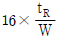
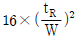
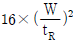
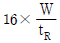
(정답률: 79%)
64. 원자흡광분석에 사용되는 불꽃을 만들기 위한 가연성 가스와 조연성 가스의 조합 중 불꽃 온도가 높아서 불꽃 중에서 해리하기 어려운 내화성 산화물을 만들기 쉬운 원소의 분석에 가장 적합한 것은?
- 아세틸렌(C2H2) - 공기(Air)
- 프로판(C3H8) - 공기(Air)
- 수소(H2) - 산소(O2)
- 아세틸렌(C2H2) - 아산화질소(N2O)
(정답률: 58%)
65. 배출가스 중 금속산화물을 유도결합플라즈마 - 원자발광분광법으로 분석할 때 사용되는 용어의 설명으로 옳지 않은 것은?
- 감도는 각 원소 성분에 대해 입사광의 1%(0.0044 흡광도)를 흡수할 수 있는 시료의 농도를 말한다.
- 표준용액은 가능한 한 시료의 매질과 동일한 조성을 갖도록 조제해야 하며, 표준물질의 함량은 1% 이내의 함량 정밀도를 가져야 한다.
- 표준원액은 정확한 농도를 알고 있는 비교적 고농도의 용액으로, 일반적으로 1000mg/kg 농도에서 1% 이내의 불확도를 나타내야 한다.
- 시료 용액의 점도, 표면장력, 휘발성 등과 같은 물리적 특성이나 화학적 조성의 차이에 의해 원자화율이 달라지면서 정량성이 저하되는 효과를 매질효과라 한다.
(정답률: 41%)
66. 환경대기 중 아황산가스를 파라로자닐린법으로 분석할 때 방해물질 제거에 관한 설명으로 옳은 것은?
- NOx ; 측정기간을 늦춘다.
- Mn, Fe, Cr ; EDTA 및 인산을 사용한다.
- O3 ; 슬파민산(NH2SO3H)을 사용한다.
- NH3 ; pH를 4.5 이하로 조절한다.
(정답률: 43%)
67. 대기오염공정시험방법상 화학분석 일반사항에 관한 규정 중 옳은 것은?
- 상온은 15-25℃, 실온은 1-35℃, 찬 곳은 따로 규정이 없는 한 0-15℃의 곳을 뜻한다.
- 방울수라 함은 20℃에서 정제수 10방울을 떨어뜨릴 때 그 부피가 약 1mL 되는 것을 뜻한다.
- “약”이란 그 무게 또는 부피에 대하여 ±1% 이상의 차가 있어서는 안된다.
- 10억분율은 pphm으로 표시하고 따로 표시가 없는 한 기체일 때는 용량 대용량(V/V), 액체일 때는 중량 대 중량(W/W)을 표시한 것을 뜻한다.
(정답률: 53%)
68. 환경대기 중 금속화합물을 원자흡수분광광도법(원자흡광광도법)으로 분석하고자 할때 화학적 간섭에 관한 사항으로 거리가 먼 것은?
- 아연 분석 시 213.8 nm 측정파장을 이용할 경우 불꽃에 의한 흡수 때문에 바탕선(Baseline)이 높아지는 경우가 있다.
- 철 분석 시 규소(Si)를 다량 포함하고 있을 때는 0.2% 염화칼슘(CaCl2) 용액을 첨가하여 분석하고, 유기산(특히 시트르산)이 다량 포함되어 있을 때는 0.5% 인산을 가하여 간섭을 줄일 수 있다.
- 니켈 분석 시 다량의 탄소가 포함된 시료의 경우, 시료를 채취한 여과지를 적당한 크기로 잘라서 전기로 안에서 1⑤-110℃에서 30분 이상 건조한 후 전처리 조작을 행한다.
- 크롬 분석 시 아세틸렌-공기 불꽃에서는 철, 니켈 등에의한 방해를 받으므로 황산나트륨, 황산칼륨 또는 이플루오린화수소암모늄을 1% 정도 가하여 분석한다.
(정답률: 45%)
69. 굴뚝 배출가스 중 염소분석방법에 관한 설명으로 옳지 않은 것은? (단, 오르토톨리딘법 기준)
- 이 방법은 산화성 가스나 환원성 가스의 영향을 무시할 수 있는 경우에 적당하다.
- 시료 채취관은 유리관, 석영관 등을 사용한다.
- 흡수액이 적색으로 나타나면 시료가스채취 조작을 중지하고 흡수액을 다시 넣고 시료를 채취한다.
- 시료채취관은 굴뚝에 수평하게 채취하고, 파장 385 nm 부근에서 흡광도를 측정한다.
(정답률: 44%)
70. 다음은 환경대기 내의 일산화탄소 측정방법 중 수소염이온화 검출기법이다. ( )안에 알맞은 것은?
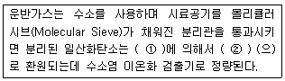
- ① 니켈촉매, ② 메탄
- ① 요오드, ② 메탄
- ① 니켈촉매, ② 탄소
- ① 요오드, ② 탄소
(정답률: 58%)
71. 굴뚝 배출가스 중의 시안화수소를 피리딘 피라졸론법에 의해 정량 시 흡광도 측정파장으로 가장 적합한 것은?
- 217 nm
- 358 nm
- 620 nm
- 710nm
(정답률: 58%)
72. 연료 연소로부터 배출되는 굴뚝 배출가스 중의 일산화탄소를 정전위전해법으로 분석하고자 할 때 주요 성능기준으로 옳지 않은 것은?
- 측정범위는 최고 5%로 한다.
- 재현성은 측정범위 최대 눈금값의 ±2% 이내로 한다.
- 90% 응답 시간은 2분 30초 이내로 한다.
- 전압 변동에 대한 안정성은 최대 눈근값의 ±1% 이내로 한다.
(정답률: 42%)
73. 가스크로마토그래프법에서 일반적으로 사용되는 고정상 액체 중 실리콘계에 해당하는 것은?
- 헥사데칸
- 디메틸술포란
- 불화규소
- 인산트리크레실
(정답률: 50%)
74. 굴뚝 배출가스 중 먼지측정을 위해 보통형 흡인노즐을 사용할 경우 가스미터에서 등속 흡인을 위한 흡인량(L/min)?
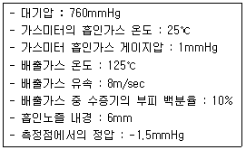
- 7.1
- 9.1
- 11.1
- 13.1
(정답률: 24%)
75. 하이볼륨에어샘플러에 의해 포집된 비산먼지의 농도를 계산하려고 한다. 풍속이 0.5m/sec 미만 또는 10m/sec 이상되는 시간이 전 채취시간의 50% 이상일 때 풍속보정계수는?
- 1.0
- 1.2
- 1.4
- 1.5
(정답률: 49%)
76. 가스크로마토그래프 분석에 사용하는 검출기 중 이황화탄소를 분석 (0.5V/Vppm 이상)하는데 가장 적합한 검출기는?
- FPD
- ICD
- ECD
- TCD
(정답률: 45%)
77. 배출허용기준 중 표준 산소농도를 적용받는 어떤 오염물질의 보정된 배출가스 유량이 50 Sm3/day 이었다. 이 때 배출가스를 분석하니 실측 산소농도는 5%, 표준 산소농도는 3%일 때 측정되어진 실측 배출가스 유량(Sm3/day)은?
- 46.25
- 51.25
- 56.25
- 61.25
(정답률: 41%)
78. 굴뚝배출가스 중 질소산화물을 연속적으로 자동측정하는 방법 중 화학발광분석계의 구성에 관한 설명으로 거리가 먼 것은?
- 유량제어부는 시료가스 유량제어부와 오존가스 유량제어부가 있으며 이들은 각각 저항관, 압력조절기, 니들밸브, 면적유량계, 압력계 등으로 구성되어 있다.
- 반응조는 시료가스와 오존가스를 도입하여 반응시키기 위한 용기로서 이 반응에 의해 화학발광이 일어나고 내부압력조건에 따라 감압형과 상압형이 있다.
- 오존발생기는 산소가스를 오존으로 변환시키는 역할을 하며, 에너지원으로써 무성방전관 또는 자외선발생기를 사용한다.
- 검출기에는 화학발광을 선택적으로 투과시킬 수 있는 발광필터가 부착되어 있으며 전기신호를 발광도로 변환시키는 역할을 한다.
(정답률: 38%)
79. 굴뚝이나 덕트의 배출가스 유속 및 유량 측정방법에 대한 설명 중 가장 거리가먼 것은?
- 건조 배출가스 유량은 단위시간당 배출되는 표준상태의 건조배출 가스량(Sm3/h)으로 나타낸다.
- 차압계는 최소 0.1mmH2O 눈금을 읽을 수 있는 마노미터를 사용해야 한다.
- 기압계는 2.54mmHg (34.54 mmH2O) 이내에서 대기압력을 측정할 수 있는 수은, 아네로이드 등으로 1회/년 이상 교정검사를 한 것을 사용한다.
- 피토우관은 스텐레스와 같은 재질의 금속관으로 관의 바깥지름의 범위는 4-10 mm 정도이어야 한다.
(정답률: 44%)
80. 굴뚝 배출가스 내의 질소사화물의 분석방법 중 아연환원 나프틸에틸렌 디아민 법에 의한 농도 계산식으로 옳은 것은? (단, C= 질소산화물의 농도 (V/V ppm) , Vs=시료가스 채취량 (mL) (0℃, 760mmHg) , n= 분석용 시료용액의 희석배수, V=검량선에서 구한 이산화질소의 부피 (μL) )
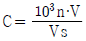
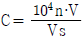
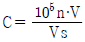
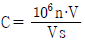
(정답률: 44%)
5과목: 대기환경관계법규
81. 대기환경보전법상 배출오염물질의 배출허용기준 준수여부 확인을 위한 측정기기 부착사업자가 측정결과의 신뢰도와 정확도 유지를 위한 측정기기의 운영·관리기준을 지키지 아니할 경우 과태료 부과기준은?
- 600만원 이하의 과태료
- 300만원 이하의 과태료
- 200만원 이하의 과태료
- 100만원 이하의 과태료
(정답률: 34%)
82. 대기환경보전법령상 연료를 연소하여 황산화물을 배출하는 시설의 연료 중 황함유량이 0.5% 이하인 경우 기본부과금의 농도별 부과계수로 옳은 것은? ( 단, 황산화물의 배출량을 줄이기 위하여 방지시설을 설치한 경우와 생산공정상 황산화물 배출량이 줄어든다고 인정하는 경우 제외)
- 0.1
- 0.2
- 0.4
- 1.0
(정답률: 53%)
83. 대기환경보전법규상 배출시설 및 방지시설 등과 관련된 행정처분기준 중 환경기술인의 준수사항 및 관리사항을 이행하지 아니한 경우 각 위반차수(1차-4차)별 행정처분 기준으로 옳은 것은?
- 조업정지 - 경고 - 경고 - 허가취소 또는 폐쇄
- 조업정지 10일 - 조업정지 30일 - 허가취소 - 폐쇄
- 경고 - 조업정지 10일 - 개임명령 - 허가취소 또는 폐쇄
- 경고 - 경고 - 경고 - 조업정지 5일
(정답률: 27%)
84. 다음은 대기환경보전법규상 배출시설 변경신고에 관한 사항이다. ( ) 안에 알맞은 것은?
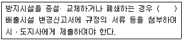
- 변경전에
- 그 사유가 발생한 날부터 5일 이내에
- 그 사유가 발생한 날부터 10일 이내에
- 그 사유가 발생한 날부터 30일 이내에
(정답률: 50%)
85. 대기환경보전법규상 특정대기 유해물질이 아닌 것은?
- 니켈
- 프로필렌
- 석면
- 아닐린
(정답률: 51%)
86. 대기환경보전법상 황사피해방지를 위한 환경부 산하 황사대책위원회의 심의·조정업무와 가장 거리가 먼 것은? (단, 그 박에 황사피해 방지를 위하여 위원장이 필요하다고 인정하는 사항 등은 제외)
- 종합대책의 수립과 변경에 관한 사항
- 황사피해방지와 관련된 분야별 정책에 관한 사항
- 종합대책 추진상황과 민관 협력방안에 관한 사항
- 황사발생에 따른 민간기업의 민원수렴 및 보상대책에 관한 사항
(정답률: 71%)
87. 대기환경보전법규상 정밀검사 업무를 대행하는 지정사업자 등에 대한 과징금 산정기준으로 옳은 것은? (단, 1개월당 과징금액 기준, 월 평균검사대수는 재검사대수 제외)
- 월 평균검사대수가 1500대 이상 1800대 미만인 경우 과징금액은 360만원이다.
- 월 평균검사대수가 360대 미만인 경우 과징금액은 72만원 이다.
- 월 평균검사대수는 위반행위가 있은 날부터 이전 최근 3개월간 평균검사대수로 한다.
- 월 평균검사대수가 1200대 이상 1500대 미만인 경우 과징금액은 300만원이다.
(정답률: 46%)
88. 대기환경보전법규상 자동차 연료 · 첨가제 또는 촉매제 검사기관의 지정기준 중 자동차연료 검사기관의 기술능력 및 검사장비 기준으로 옳지 않은 것은?
- 검사원은 국가기술자격법 시행규칙에 의거 기계(자동차 분야), 기계(전기분야), 환경 직무분야의 산업기사 자격 이상을 취득한 사람이어야 한다.
- 검사원은 4명 이상이어야 하며, 그 중 2명은 해당 업무에 5년 이상 종사한 경험이 있는 사람이어야 한다.
- 휘발유 · 경유 · 바이오디젤(BD100) 검사를 위해 1ppm 이하 분석가능한 황함량분석기를 1식을 갖추어야 한다.
- 휘발유 · 경유 검사기관과 LPG 검사기관의 기술능력기준은 같으며, 두 검사 업무를 함께 하려는 경우에는 기술능력을 중복하여 갖추지 아니할 수 있다.
(정답률: 28%)
89. 다중이용시설 등의 실내공기질 관리법규상 의료기관의 HCHO (㎍/m3) 실내공기질 유지기준은?
- 10 이하
- 25 이하
- 100 이하
- 150 이하
(정답률: 40%)
90. 다음은 대기환경보전법상 용어의 뜻이다. ( )안에 알맞은 것은?
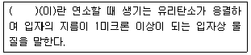
- 스모그
- 안개
- 검댕
- 먼지
(정답률: 65%)
91. 다음은 대기환경보전법규상 정밀검사업무를 대행하는 지정사업자가 과징금 처분을 받을 경우 과징금 산정기준이다. ( )안에 알맞은 것은?
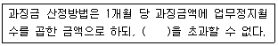
- 1천만원
- 2천만원
- 3천만원
- 5천만원
(정답률: 32%)
92. 다중이용시설 등의 실내공기질 관리법규상 실내주차장의 ① PM10( ㎍/m3) , ② CO(ppm) 실내공기질 유지기준으로 옳은 것은?
- ① 100 이하 , ② 10 이하
- ① 100 이하 , ② 25 이하
- ① 200 이하 , ② 10 이하
- ① 200 이하 , ② 25 이하
(정답률: 34%)
93. 대기환경보전법규상 휘발유를 연료로 사용하는 경자동차의 배출가스 보증기간 적용기준은? (단, 2009년 1월 1일 이후 제작 자동차 기준)
- 1년 또는 20000 km
- 2년 또는 160000 km
- 6년 또는 100000 km
- 10년 또는 192000 km
(정답률: 55%)
94. 대기환경보전법규상 대기오염경보 발령 시 포함되어야 할 사항으로 가장 거리가 먼 것은? (단, 기타사항은 제외)
- 경보단계
- 경보대상 지역
- 경보단계별 조치사항
- 경보대상 기간
(정답률: 68%)
95. 다음은 대기환경보전법규상 운행차 정밀검사 부적합 판정을 받은 자동차 소유자에 대한 재검사 기간과 관련된 사항이다. ( )안에 알맞은 것은?
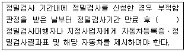
- 3일 이내
- 5일 이내
- 7일 이내
- 10일 이내
(정답률: 41%)
96. 대기환경보전법규상 배출가스 관련부품을 장치별로 구분할 때 다음 중 배출가스 자기진단장치 (On Board Diagnostics)에 해당하는 것은?
- 서모스태트 감시장치 (Thermostat Monitor)
- EGR제어용 서모밸브 (EGR Control Thermo Valve)
- 정화조절밸브 (Purge Control Valve)
- 냉각수온센서 (Water Temperature Sensor)
(정답률: 47%)
97. 대기환경보전법규상 먼지 · 황산화물 및 질소산화물의 연간 발생량 합계가 20톤 이상 80톤 미만인 사업장 배출구의 자가측정 횟수기준은? (단, 비산먼지를 제외한 배출허용기준이 적용되는 물질로하며, 기타사항은 고려하지 않는다. )
- 매일
- 매주 1회 이상
- 매월 2회 이상
- 2개월마다 1회 이상
(정답률: 50%)
98. 환경정책기본법령상 이산화질소의 대기환경기준(ppm)은? (단, 24시간 평균치)
- 0.03 이하
- 0.⑤ 이하
- 0.06 이하
- 0.10 이하
(정답률: 49%)
99. 대기환경보전법상 환경부장관은 대기오염물질과 온실가스를 줄여 대기환경을 개선하기 위한 대기환경개선 종합계획을 몇 년마다 수립 · 시행하여야 하는가?
- 2년
- 3년
- 5년
- 10년
(정답률: 54%)
100. 대기환경보전법규상 전기만을 동력으로 사용하는 자동차의 1회 충전 주행거리가 80 km 이상 160 km 미만인 경우 제 몇 종 자동차에 해당하는가?
- 제 1종
- 제 2종
- 제 3종
- 제 4종
(정답률: 60%)
산악지형에서 발생하는 산곡풍은 산의 정상에서 공기가 상승하면서 생기는 상승기류와, 산의 기슭에서 공기가 내려가면서 생기는 하강기류로 구성된다. 이때, 낮에는 태양열로 인해 지면이 가열되면서 상승기류가 강해지고, 이에 따라 하강기류도 강해져서 산의 사면을 따라 내려가게 된다. 따라서, "산악지형에서 발생하는 산곡풍 중 낮에는 산의 사면을 따라 하강류가 발생한다."는 옳은 설명이다.